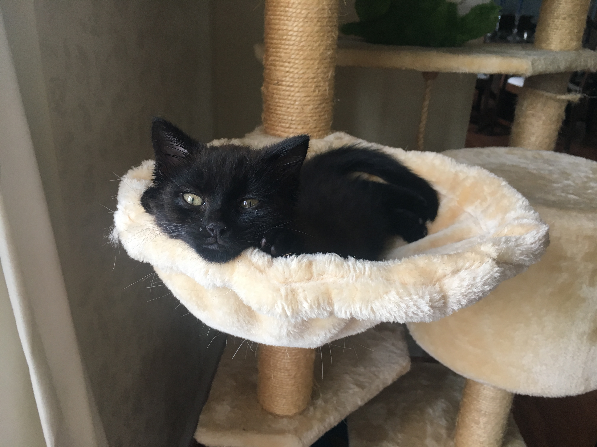
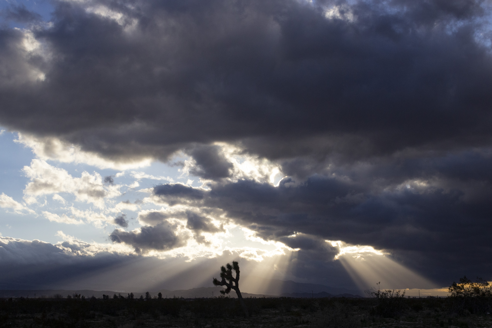
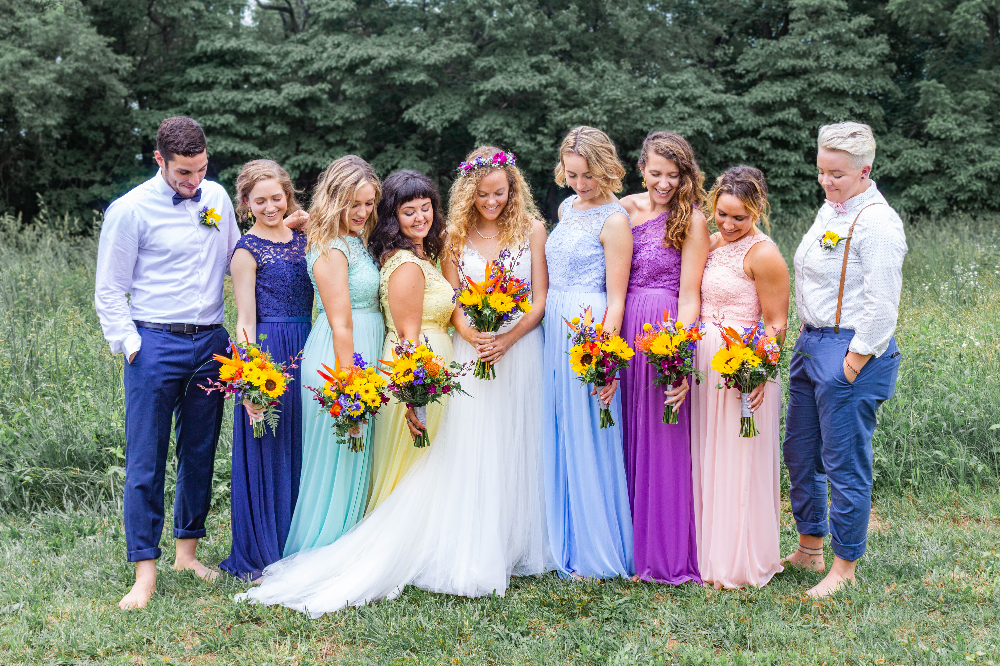
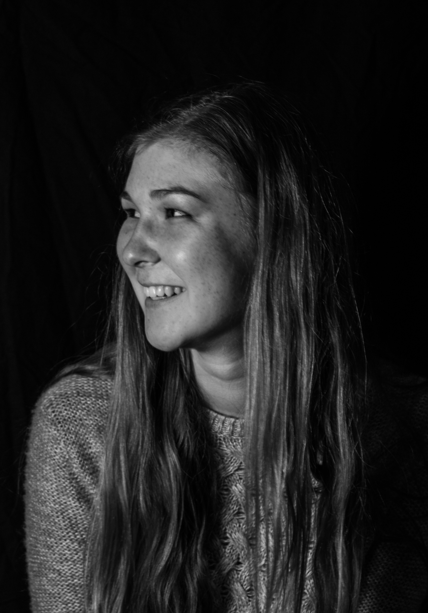

Hey again!
If you're wondering who I am, you've come to the right place.
I may not have always known I wanted to be a designer, but I've always loved helping the people around me and making them happier. In high school my passion was musical theater, and the empathy necessary to portray characters unlike myself has very much stayed with me in my transition to design and in my life as a whole.
I believe in always having a good sense of humor and never taking myself too seriously. That being said, I've also developed a solid work ethic, thanks to the rigorous Graphic Design program at Penn State (oh, and my parents).
some things I love ↓
This picture is a pretty accurate depiction of me: I love being in beautiful places, not wearing shoes, and I wear that scarf pretty often.
Rock Climbing
Indoor bouldering is by far my favorite way to stay active, and my favorite place to do it is the Philadelphia Rock Gym, near where I'm from. When I'm home for breaks, you can catch me at PRG almost every day, toughing out the blisters I got while I was away.
My Cat
I found my cat in a parking garage when he was just a 6-week-old kitten, and even though he's much bigger now, I still call him Kitten. (His formal name is Jack but he rarely goes by that)


Photography
I first started taking photos around 8 years ago, and since then I've gone from photographing mostly landscapes to people, events, animals, and more. Nature is still my favorite thing to capture, but I always remind myself to put my camera down and take it all in through my eyes.



